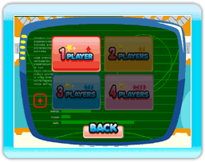
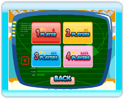

16 |
Multijugador |
 |
En la pantalla de Número de Jugadores puedes decidir cuántos jugadores participarán en el juego. Asegúrate de que el mando de Wii de cada jugador esté conectado a la consola Wii.
 Si solo hay un mando de Wii conectado, únicamente podrás seleccionar el modo de un jugador.  Al conectar 4 mandos de Wii , podrás seleccionar hasta el modo de 4 jugadores. |
 |
 |